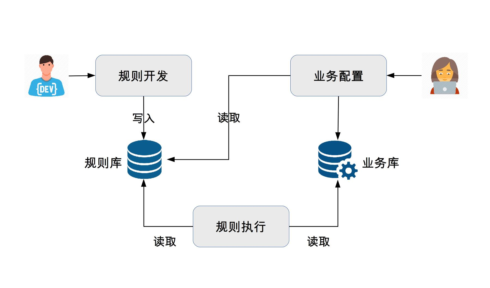

36-微内核架构详解
简介
微内核架构也被称为插件化架构，是一种面向功能进行拆分的可扩展的架构，通常用于实现基于产品的应用。例如Eclipse这类的IDE软件、UNIX这类操作系统、淘宝APP这类客户端。
基本架构
微内核架构包含两类组件：核心系统(core system)和插件模块(plugin modules)。核心系统负责与具体功能无关的通用功能，例如模块加载、模块通信等。插件模块负责实现具体的业务逻辑。
其基本架构如下图所示：

上图可知：核心系统比较稳定，不会因为业务功能扩展而不断修改、插件模块可以根据业务功能的需要不断扩展。微内核的本质就是将变化封装在插件里面，从而达到快速灵活扩展的目的。
设计关键点
微内核的核心系统设计的关键技术有：插件管理、插件连接和插件通信。
插件管理
核心系统要知道当前哪些插件可用、如何加载这些插件、什么时候加载这些插件。常见的实现方式是插件注册表机制。
核心系统提供插件注册表(可以是配置文件、也可以是代码、也可以是数据库)，插件注册表包含每个插件模块的信息，如名字、位置、加载时机(启动加载还是按需加载)等。
插件连接
插件连接是指插件如何连接到核心系统。核心系统必须制定插件和核心系统的连接规范，插件模块按连接规范实现，核心系统按照规范加载。
常见的连接机制有：OSGI、消息模式、依赖注入、甚至使用分布式的协议也可以，如RPC或http web的方式。
插件通信
插件通信是指插件间的通信。虽然设计的插件间是完全解耦的，但是实际应用中，必然存在某个业务需要多个插件协作，这要求插件间进行通信。由于插件间没有直接联系，通信必须经过核心系统，因此核心系统需要提供插件通信机制。
OSGI
OSGI的全称是open services gateway initiative,是一个插件化的标准，而不是一个可运行的框架。

模块层(Module)
模块层实现插件管理的功能。OSGI中，插件被称为一个Bundle，每个Bundle是一个jar文件，每个Bundle里面都包含一个元数据文件MANIFEST.MF，这个文件包含Bundle的基本信息。例如Bundle的名称、描述、开发商、classpath、以及需要导入的包和输出的包。OSGI核心系统会将这些信息加载到系统中用于后续使用。
生命周期层(Lifecycle)
生命周期层实现插件连接的功能，提供了执行时模块管理、模块对底层OSGI框架的访问。生命周期层精确定义了Bundle生命周期的操作(安装、更新、启动、停止、卸载)，Bundle必须按照规范实现各个操作。
服务层(Service)
服务层实现了插件通信的功能，OSGI提供了一个服务注册的功能，用于各个插件将自己能提供的服务注册到OSGI核心的服务注册中心，如果每个服务想用其它服务，则直接在服务中心搜索可用服务即可。
这里的服务注册不是插件管理功能的的插件注册，实际上是插件间通信的机制。
规则引擎架构
规则引擎从结构上看也属于微内核架构的一种具体体现，其中执行引擎可以看做是微内核，执行引擎解析配置好的业务流，执行其中的条件和规则，通过这种方式来支持业务的灵活多变。
规则引擎在计费、保险、促销等业务领域应用较多。例如电商促销：满100减50，新用户减30...，促销方案可能会有成千上万种，这样的业务如果都靠代码来实现，开发效率远远跟不上业务的变化速度，而规则引擎可以解决这类问题：
可扩展
通过引入规则引擎，业务逻辑实现与业务系统分离，可以在不改动业务系统的情况下扩展新的业务功能。
易理解
规则通过自然语言描述，业务人员易于操作和理解，而不像代码一样只有程序员才能理解和开发。
高效率
规则引擎一般提供可视化的规则定制、审批、查询及管理，方便业务人员快速配置新的业务。
规则引擎的基本架构：

- 开发人员将业务功能分解成多个规则，将规则保存到规则库中。
- 业务人员根据业务需要，通过对规则的排列组合，配置成业务流程，保存在业务库中。
- 规则引擎执行业务流程实现业务功能。
对照微内核架构的设计关键点，看规则引擎是如何实现的：
插件管理
规则引擎中的规则就是微内核架构中的插件，引擎就是微内核架构中的内核。规则可以被引擎加载和执行。在规则引擎架构中，规则一般保存到规则库中，通常保存在关系型数据库中。
插件连接
类似于开发使用java、c语言一样，规则引擎也定义了规则开发语言，业务人员需要基于规则语言来编写业务文件，然后于规则引擎来执行文件完成业务功能，因此规则引擎中的插件连接其实是规则语言。
插件通信
规则引擎的规则之间进行通信的方式就是数据流和事件流，由于单个规则并不需要依赖于其它规则，因此规则之间没有主动的通信，规则只需要输出数据或事件，由引擎将数据或事件传递给下一个规则。
目前常用的规则引擎是JBOSS开源的JBOSS Drools。采用Java开发，基于Rete算法。